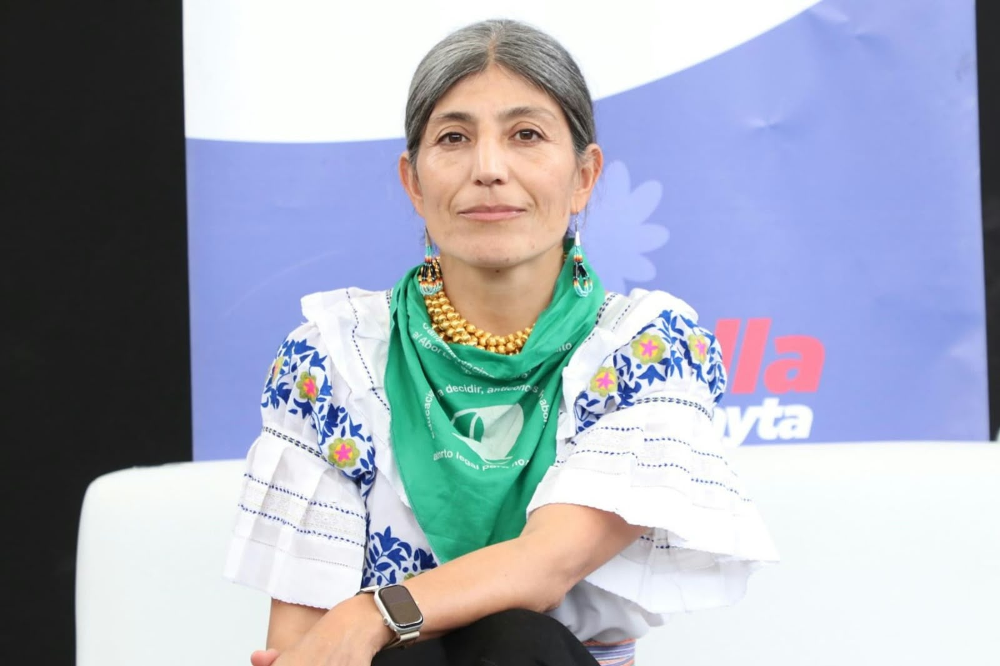
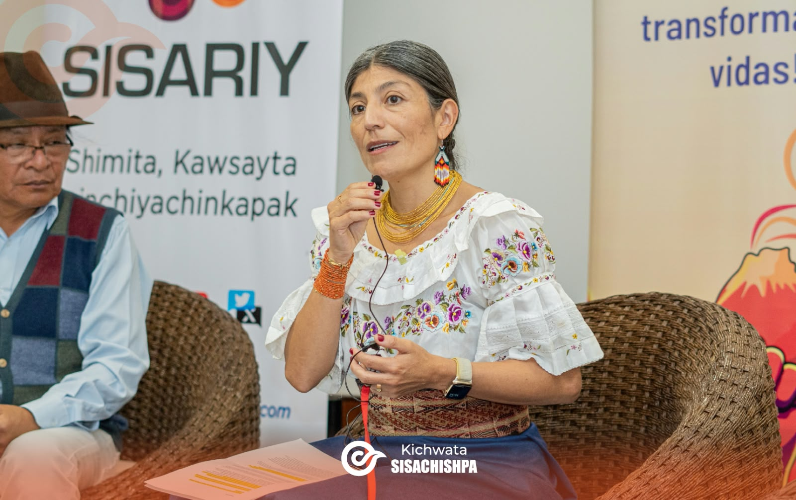
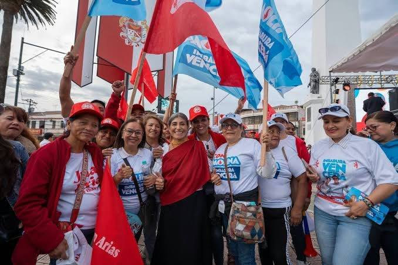

1. Introducción: La encrucijada imbabureña entre contrastes y votos
En el tablero político del norte ecuatoriano, la provincia de Imbabura se encuentra ante una de sus encrucijadas electorales más complejas y determinantes. Distinguida en 2019 como el primer Geoparque Mundial de la UNESCO en el Ecuador, este territorio de 4.599 kilómetros cuadrados sintetiza agudos contrastes socioeconómicos: una pujante actividad turística, textil y artesanal, frente a una persistente brecha de pobreza rural por Necesidades Básicas Insatisfechas (NBI) que en parroquias de Otavalo, Cotacachi y Pimampiro supera el 55% (INEC, 2023). En este escenario de disputas por el modelo de desarrollo provincial, emerge la candidatura a la Prefectura de Paolina Vercoutère Quinche, quien junto a Michael Encalada como postulante a la viceprefectura, encabeza la alianza política Juntos por la Transformación.
Analizar esta propuesta desde el periodismo de investigación universitario reviste un interés singular. La candidatura articula una narrativa de ruptura frente a los privilegios tradicionales, postulando un modelo plurinacional y feminista. Sin embargo, la candidata no proviene de la periferia: fue la viceprefecta electa de la provincia, habiendo compartido el sillón ejecutivo del Gobierno Provincial de Imbabura hasta su dimisión formal. Este reportaje examina la viabilidad, contradicciones y alcance de su plan de gobierno en sus tres ejes centrales: Político, Social y Económico, frente a la estrecha realidad presupuestaria provincial.
«La provincia no puede seguir administrándose bajo la lógica de la dádiva o el monopolio de la obra pública; el reto es democratizar el poder desde la plurinacionalidad y la justicia territorial.»
— Paolina Vercoutère Quinche, asamblea programática provincial (2026).
2. Antecedentes y trayectoria: El salto de la viceprefectura al liderazgo de ruptura
La trayectoria de Paolina Vercoutère Quinche se forja en el cruce entre la academia de posgrado, el activismo social y la gestión pública. Nacida en Otavalo, de madre kichwa y padre francés, consolidó su liderazgo en la defensa de los derechos colectivos, la plurinacionalidad y los estudios de género con enfoque interseccional. Su carrera registra hitos inéditos en la sierra norte: fue la primera mujer indígena kichwa en ejercer como Gobernadora de Imbabura, un cargo históricamente ocupado por élites tradicionales de Ibarra.

Posteriormente, en las elecciones seccionales de 2023, fue electa Viceprefecta de Imbabura en binomio con Richard Calderón. Desde esa función impulsó convenios internacionales sobre ciudades seguras para mujeres y niñas, foros globales de derechos humanos y proyectos de asistencia social. No obstante, en agosto de 2026, Vercoutère formalizó su renuncia irrevocable al cargo, marcando un desmarque político con la administración en funciones para liderar la candidatura a la Prefectura junto a Michael Encalada bajo el movimiento Juntos por la Transformación. Este quiebre la sitúa en una posición exigente: capitaliza el dominio técnico del GAD Provincial, pero debe responder ante el electorado por los pasivos y demandas no resueltas durante los más de tres años en que compartió el mando seccional.
3. Eje Político: Gobernanza plurinacional, descentralización y gobernabilidad
El eje político plantea una Gobernanza Plurinacional y Descentralizada, cuyo objetivo es transformar la toma de decisiones en los seis cantones y 36 juntas parroquiales rurales de Imbabura. Frente al centralismo burocrático, el binomio Vercoutère-Encalada prioriza tres líneas de acción fundamentales:

Presupuesto Participativo Vinculante
Reorientar partidas para que comunidades kichwas, afroecuatorianas y campesinas decidan directamente las obras prioritarias sin intermediarios clientelares.
Consejo Intercultural Permanente
Institucionalizar mesas de fiscalización ciudadana con organizaciones de base (FICI, UNORCAC) para vigilar las compras públicas y el mantenimiento vial.
Transparencia y Cero Prebendas
Veedurías universitarias independientes en la asignación de contratos públicos y fiscalización rigurosa del parque de maquinaria pesada.
Descentralización y Juntas Parroquiales
Convenios de concurrencia directa con las 36 juntas parroquiales rurales de Imbabura para transferir maquinaria, recursos y obras sin exclusión territorial.
Sin embargo, el análisis de gobernabilidad evidencia un desafío mayúsculo: el Consejo Provincial reúne a los alcaldes cantonales y delegados parroquiales. Investigadores de FLACSO (2021) advierten que una retórica de confrontación con las élites urbanas puede derivar en bloqueos legislativos en la cámara provincial si no se construye una sólida diplomacia de consensos pragmáticos con los cabildos municipales.
5. Eje Económico: Agroecología, vialidad para el comercio y el Geoparque UNESCO
En materia económica, la candidatura aborda la reactivación productiva de Imbabura mediante cuatro ejes de intervención territorial y sostenible:

Fomento Agropecuario & Bioinsumos
Distribución de bioinsumos y abonos orgánicos a precio de costo, subsidio al análisis de suelos y tecnificación del riego parcelario por goteo en valles de Pimampiro y Chota.
Geoparque Mundial UNESCO
Potenciación del turismo comunitario y vivencial gestionado por comunas en Cuicocha, San Pablo y la cuenca de Intag, blindando las fuentes de agua frente a la minería metálica a gran escala.
Vialidad Rural para la Cosecha
Asfaltado y mantenimiento prioritario de los «caminos de la cosecha», conectando centros de producción agrícola con mercados mayoristas de Ibarra y Quito para abaratar fletes a pequeños campesinos.
Autonomía Financiera Femenina
Fondos de crédito asociativo «Warmi Imbabura» sin garantías patrimoniales excluyentes para artesanas y productoras agroecológicas, siguiendo directrices de la CEPAL (2022).
6. Análisis económico, fuentes e impactos: ¿Cuánto cuesta la promesa?
El análisis riguroso de viabilidad económica confronta las promesas electorales con la estrechez fiscal. El GAD Provincial de Imbabura maneja un presupuesto anual de entre $45 y $55 millones de dólares, dependiente en más del 80% de transferencias del Modelo de Equidad Territorial del Ministerio de Economía y Finanzas (MEF). Con cerca del 60% del gasto comprometido en mantenimiento de más de 2.800 kilómetros de vías y costos operativos, el margen para financiar transferencias monetarias y becas es sumamente estrecho. Economistas de la UASB advierten que financiar estos programas requerirá captar fondos no reembolsables de la cooperación internacional, aprovechando el sello del Geoparque UNESCO.
«El programa combina justicia social con innovación comunitaria, pero enfrenta una severa restricción de caja. Para evitar el desfinanciamiento de obras viales básicas, la administración provincial deberá apalancar con urgencia fondos verdes multilaterales (BID, CAF, Unión Europea).»
— Econ. David Santillán, especialista en Finanzas Públicas y Desarrollo Regional (UASB).
| Eje Estratégico | Impactos Positivos Proyectados | Riesgos y Retos de Viabilidad | Actores Involucrados |
|---|---|---|---|
| Eje Político (Gobernanza Plurinacional) | Inclusión de comunas en la toma de decisiones presupuestarias; descentralización hacia las 36 juntas parroquiales. | Riesgo de bloqueo legislativo en el Consejo Provincial con alcaldes de oposición urbana. | Comunidades kichwas y afroecuatorianas, Juntas Parroquiales, Alcaldías cantonales. |
| Eje Social (Equidad y Protección) | Protección efectiva a niños huérfanos («wakcha sakirishkamanta») y reducción de violencia de género. | Alta dependencia de transferencias del MEF; riesgo de suspensión de ayudas si se retrasan las asignaciones estatales. | Mujeres campesinas, niñas y adolescentes, Universidad Técnica del Norte, Patronato. |
| Eje Económico (Producción y Vialidad) | Reducción de costos de transporte agropecuario y puesta en valor del Geoparque Mundial UNESCO sin depredación. | Alto costo del kilómetro de asfaltado rural ($120.000-$180.000); tensiones socioambientales por minería en Intag. | Agricultores familiares, transportistas, sector artesanal y turístico, cámaras de producción. |
7. Registro audiovisual: El discurso de campaña y la narrativa territorial
Para contrastar el discurso programático con la interacción directa en territorio y la estrategia comunicacional digital del binomio, documentamos tres piezas audiovisuales fundamentales difundidas en canales oficiales y medios provinciales. Cada reproductor ha sido configurado con su enlace canónico verificado y cuenta con botón de acceso directo a Facebook:
1. Encuentro ciudadano: Discurso central sobre plurinacionalidad y transformación
Contexto periodístico: Entrevista e intervención de la candidata ante dirigentes de los seis cantones, donde expone los motivos de su renuncia a la viceprefectura y fundamenta su alianza con Michael Encalada bajo el movimiento Juntos por la Transformación.
2. Reel territorial: Derechos colectivos y cercanía con la ruralidad
Contexto periodístico: Pieza audiovisual orientada a audiencias digitales, destacando la presencia en ferias rurales y el diálogo intergeneracional con adultos mayores y mujeres de las comunidades imbabureñas.
3. Reel de propuesta: Juventud, becas universitarias y futuro provincial
Contexto periodístico: Cobertura periodística de Diario El Norte abordando las propuestas dirigidas al electorado estudiantil: becas de educación superior, conectividad rural y deporte parroquial.
8. Fotogalería testimonial: Las imágenes del reportaje
Haga clic en cualquiera de las fotografías para desplegar el visor interactivo de alta resolución con sus créditos y ficha técnica de procedencia:
9. Conclusiones: La tensión irreductible entre narrativa y gestión
La candidatura de Paolina Vercoutère Quinche y Michael Encalada condensa una de las propuestas más articuladas en plurinacionalidad, equidad de género y derechos colectivos en la historia electoral de Imbabura. Su plan conecta con las demandas desatendidas de las comunidades rurales e interpela las estructuras tradicionales de poder provincial.
No obstante, su viabilidad descansa en resolver dos tensiones fundamentales: superar la contradicción de cuestionar a las élites mientras se ejerció la viceprefectura hasta agosto de 2026, y demostrar disciplina fiscal para costear sus programas sociales sin desatender los más de 2.800 kilómetros de vías rurales que reclaman los agricultores. El electorado imbabureño decidirá si esta propuesta encarna una transformación estructural o un nuevo episodio de promesas ante una realidad fiscal insoslayable.
10. Referencias bibliográficas (Normas APA 7.ª edición)
El presente reportaje de investigación fue fundamentado en fuentes primarias, estadísticas oficiales del Estado ecuatoriano, documentos de organismos multilaterales y publicaciones académicas indexadas:
- Comisión Económica para América Latina y el Caribe (CEPAL). (2022). La autonomía económica de las mujeres en la recuperación transformadora con igualdad (Serie Asuntos de Género, N.° 161). Naciones Unidas. https://www.cepal.org/es/publicaciones/47990
- Consejo Nacional Electoral del Ecuador (CNE). (2026). Plan de Trabajo de la Alianza Provincial Juntos por la Transformación para la Prefectura y Viceprefectura de Imbabura (Período 2027–2031). Delegación Provincial Electoral de Imbabura. https://cne.gob.ec
- Facultad Latinoamericana de Ciencias Sociales (FLACSO Ecuador). (2021). Plurinacionalidad, autonomías indígenas y gobernanza subnacional en la región andina: Debates territoriales contemporáneos (S. Ospina & M. Santillana, Eds.). FLACSO Sede Ecuador. https://biblio.flacsoandes.edu.ec
- Gobierno Autónomo Descentralizado Provincial de Imbabura (GADPI). (2024). Plan de Desarrollo y Ordenamiento Territorial de la Provincia de Imbabura (PDOT 2023–2027): Actualización y diagnóstico territorial. Dirección General de Planificación Provincial. https://www.imbabura.gob.ec
- Instituto Nacional de Estadística y Censos (INEC). (2023). Encuesta Nacional sobre Relaciones Familiares y Violencia de Género contra las Mujeres (ENVIGMU) y Encuesta Nacional de Empleo, Desempleo y Subempleo (ENEMDU) - Reporte Provincial Imbabura. Dirección de Estadísticas Sociodemográficas. https://www.ecuadorencifras.gob.ec
- Organización de las Naciones Unidas para la Educación, la Ciencia y la Cultura (UNESCO). (2019). Imbabura Geoparque Mundial de la UNESCO: Consejo Ejecutivo 206 EX/7. Sector de Ciencias Exactas y Naturales. https://es.unesco.org/global-geoparks/imbabura